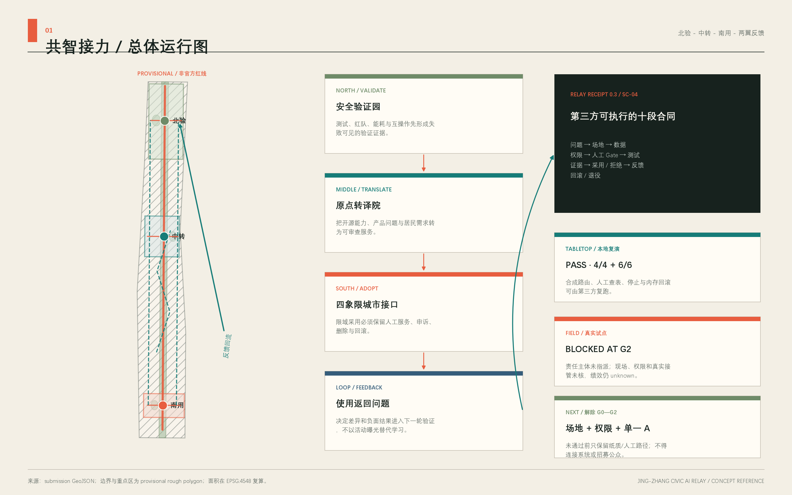
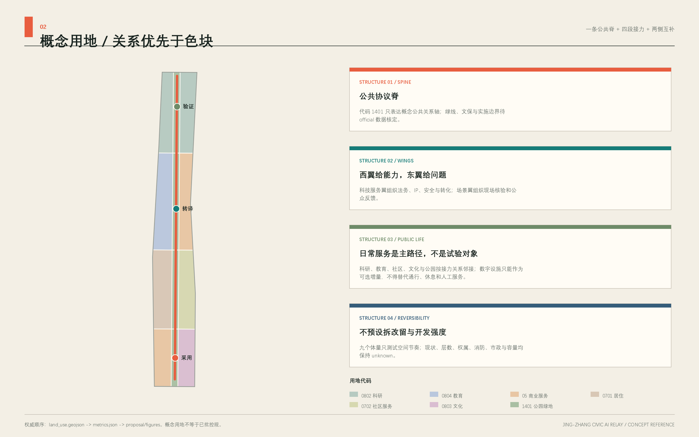
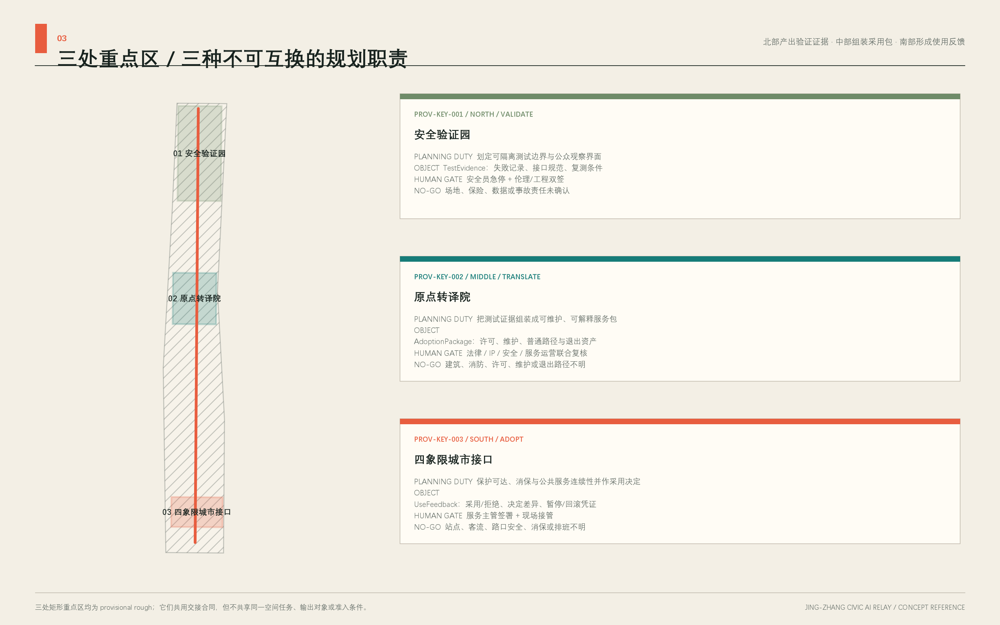
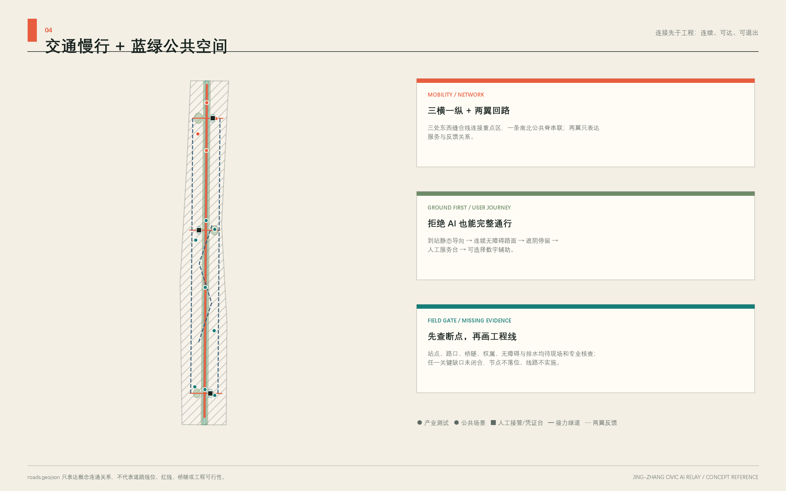
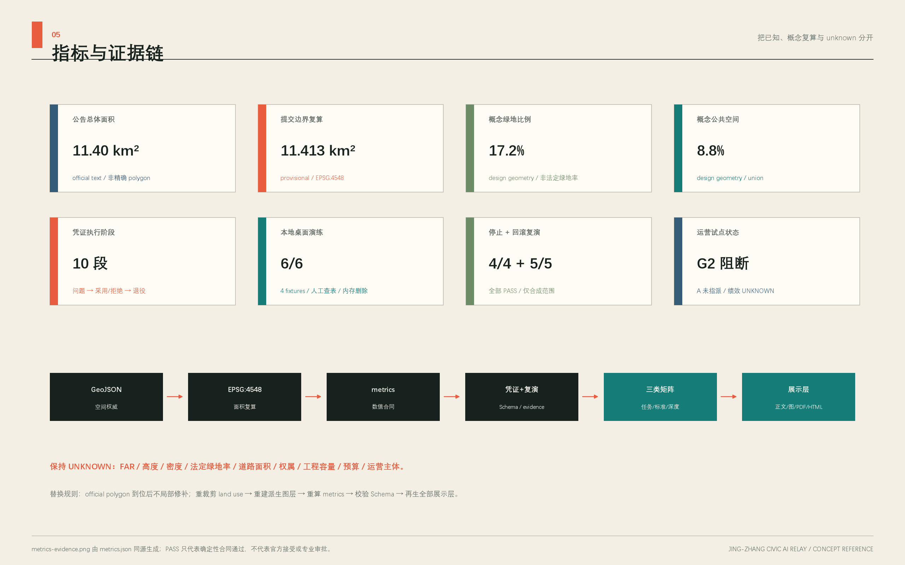

主名称：京张共智接力带
英文名：Jing-Zhang Civic AI Relay
核心判断：不是把三个园区串在一条“展示轴”上，而是让公共问题、技术验证、产业转译、城市使用、社会反馈和再验证沿京张走廊持续接力；每次交接都留下能被质询、拒绝和回滚的凭证。

整体运行逻辑：先服务城市，再验证技术
“共智接力”首先是一条城市运行回路，不是一组 AI 展项。北部把失败和复测条件整理为 TestEvidence，中部把证据、许可、维护、普通路径和退出资产组装为 AdoptionPackage，南部在人工服务连续的前提下形成采用、拒绝或暂停决定及 UseFeedback；东西两翼再把城市问题、专业能力和负面结果送回下一轮验证。[data:geometry/roads.geojson#ROAD-001] [data:geometry/public_space.geojson#PUBLIC-001]
| 接力环节 | 交接对象 | 对城市的直接价值 | 不得越过的条件 |
|---|---|---|---|
| 北部验证 | 失败记录、接口规则、复测条件 | 让产业团队先看见风险，公众能看见测试边界 | 场地、数据、保险或事故责任不清即不测 |
| 中部转译 | 许可、维护、普通路径、退出资产 | 把原型转成可解释、可维护、可拒绝的服务包 | 法律、IP、安全、维护或退出责任不清即不交接 |
| 南部采用 | 采用/拒绝理由、决定差异、使用反馈 | 基本公共服务不断线，负面结果同样公开 | 值守、消保、无障碍或人工接管不清即不试用 |
| 两翼反馈 | 去标识化问题、能力目录、复盘条件 | 让社区问题与专业能力持续返回，而非停在活动曝光 | 没有授权交换、回应路径或退出机制即不协同 |
对居民、通勤者和访客，完整路径始终是“静态导向 → 连续无障碍通行 → 遮阴与停留 → 人工服务 → 可选择的数字辅助”；拒绝 AI 不得降低基本服务。对产业团队，价值不在展示次数，而在失败能否转成下一轮测试条件。SC-04 只是检验这套全带关系能否在一个最小切片中被第三方复跑、阻断和退出，不代表整条创新带被缩减为单一试点。[metric:human_handoff_gate_count] [assumption:A-OPERATIONS-001]
最小可执行试点：SC-04 与 Relay Receipt 0.3
本轮不新增场景数量，而把既有 SC-04“城市服务接口互操作测试”收敛为唯一最小试点。它只处理四份随包合成工单 [metric:sc04_synthetic_ticket_count]，不连接真实服务系统，不处理真实个人数据，不发送消息，也不能批准、拒绝或关闭真实事项。空间点位仍为 provisional 候选；真实运营主体、值守排班、预算、现场数据、公众参与结果和服务绩效均为 unknown。[data:geometry/public_space.geojson#SC-04] [assumption:A-OPERATIONS-001]
一张 Relay Receipt 固定十段执行链：问题 → 场地 → 数据 → 系统权限 → 人工 Gate → 测试 → 证据 → 采用/拒绝 → 反馈 → 回滚/退役。 每段都有机器字段、责任状态和失败去向；任一 Gate 缺证据即停留在上一状态，不以多智能体投票或宣传性指标越级。[data:visual/assets/relay-receipt.schema.json] [metric:relay_receipt_stage_count]
试点共有 G0—G6 七道运行 Gate。[metric:sc04_pilot_gate_count] 它们不是空间分期；每一道都必须由证据和人工签署推进。
| 不可混淆的状态 | 当前结果 | 能证明什么 / 不能证明什么 |
|---|---|---|
| 本地合成桌面演练 | PASS：4/4 工单、6/6 检查、4/4 停止分支、5/5 回滚步骤可重复；内存记录由 4 清为 0 | 只证明脚本、状态、人工查表替代和退出分支可复现，不证明真实人工接管或服务绩效 [data:visual/assets/sc04-tabletop-evidence.json] |
| 运营沙箱与现场试点 | NOT AUTHORIZED / NOT RUN：G2 责任主体仍未指派，G0—G1 现场与数据授权未完成 | 不连接真实系统、不招募公众、不产生采用结论；结果继续为 null/unknown [data:visual/assets/operations-matrix.json] |
| Gate | 当前可复核状态 | 进入下一 Gate 的必要条件 | 未通过时的处理 |
|---|---|---|---|
| G0 问题与场地 | 已定义方案边界：四份合成工单、模拟柜台、无真实交易 | official 候选场地、权属、无障碍与服务边界完成现场核查 | 保持桌面 fixture，不落位、不招募公众 |
| G1 数据与权限 | 已定义最小字段和只读/只写沙箱权限；外部连接、识别、消息和真实决定均禁止 | 经授权数据责任方确认分类、保留、删除、日志和权限隔离 | 权限保持关闭；只允许人工按预期队列表比对 |
| G2 人工责任与非 AI 路径 | 责任角色已定义但未指派；纸质目录和人工转介脚本为常开路径 | 单一 A、值守表、升级联系人、接管演练和无障碍走查全部确认 |
不得进入限域试用；公众服务继续走纯人工路径 |
| G3 沙箱测试 | 本地桌面预演已通过；运营沙箱仍为 performance_results=null、run_status=not_run |
G0—G2 通过后，由授权团队在隔离环境复现四份 fixture，并生成真实职责范围内的日志、人工差异和删除记录 | 任一硬停止触发即隔离沙箱并执行回滚清单 |
| G4 采用/拒绝 | 决定权属于未来经授权服务主管；当前为 pending |
人工逐项签署证据，可选择采用、拒绝、暂停或要求复测 | 不得自动上线；拒绝和负面结果与采用使用同一披露结构 |
| G5 限域试用 | 尚不具备进入条件 | 主体、场地、权限、真实数据必要性、保险、申诉、维护和成本 Gate 全部通过 | 任一项 unknown 即保持沙箱，不向真实业务扩展 |
| G6 回滚/退役 | 五步退出动作已写入凭证；尚无真实系统需要执行 | 停权、隔离、切人工、处置日志、发布回滚/退役记录均有完成证据 | 新版本必须另开凭证并从 G0 重新审查 |
六项运营验收条件仍是部署前门槛，不是已取得成绩：Schema 与样例有效；4/4 工单身份和状态不丢失；4/4 到达预期人工队列且高风险事项不能自动关闭；4/4 状态转换日志完整；隔离工具后人工路径仍能完成 4/4；删除前后计数与复核记录齐全。[metric:sc04_acceptance_criterion_count]
随包脚本 node visual/assets/run_sc04_tabletop.js --check 已在无网络调用、无外部系统、无参与者和无个人数据的本地范围复演上述结构：4/4 fixture 路由与人工查表路径、6/6 桌面检查均通过。[metric:sc04_tabletop_fixture_pass_count] [metric:sc04_tabletop_acceptance_pass_count] 它生成的证据 JSON 固定输入哈希、逐项状态和未证明事项，第三方可直接比对。[data:visual/assets/sc04-tabletop-evidence.json]
桌面演练还逐一复现四个“停止并隔离”分支和五步内存回滚；这只是退出逻辑测试，不代表真实系统已经安全回滚。[metric:sc04_tabletop_stop_check_pass_count] [metric:sc04_tabletop_rollback_step_pass_count] 真实触发时仍须按“撤销权限 → 停止入口并隔离 → 全量切回纸质/人工 → 按规则处置日志 → 仅保留空 fixture、事件复盘和回滚凭证”退出。
责任模型只定义角色，不虚构机构：未来经授权服务主管承担单一 A；fixture 维护、服务人员和数据管理角色承担 R；无障碍、安全、法律与受影响使用者进入 C/I。当前 A 仍未指派，所以结构校验可以复现，真实限域试用不能启动。[data:visual/assets/operations-matrix.json]
设计依据与资料清单
本方案首先区分证据等级。公告和清权任务书决定任务边界；仓库登记为 usable_for_formal=yes 的来源支撑正式事实。[source:OFFICIAL-ANNOUNCEMENT] [source:AGENT-TASKBOOK] [source:SOURCE-REGISTRY]
处理后的 fact pack 只作阅读导航；临时 polygon 只作生成、图示和 intake 自检；全球案例只作背景机制参照。方案不会把粗略边界、开放底图、案例经验或智能体推断升级为官方红线、法定控规或政府承诺。[source:PROCESSED-FACT-PACK] [source:SITE-PACKAGE]
方案的关系合同是：目标同时服务创新生态与公共利益；空间以京张公共协议脊连接北部验证、中部转译、南部应用，并由东西两翼反馈；产业用问题池、测试证据和采用服务闭环；研发者、创业团队、居民、学生、通勤者、运营者和访客各有不同权限与风险；铁路工程、中关村创新和可质询的 AI 新文化连续表达；年度运营维护场景；治理要求最小数据、知情选择、人工复核、申诉和回滚；证据落到 GeoJSON、metrics、矩阵、图纸和来源登记。[standard:PROJECT-AGENT-OPEN-CALL-TASKBOOK] [depth:existing_conditions_diagnosis]
三类总体方向以同一组规划问题比较，而不是只换名称：
| 总体方向 | 能解决的主要问题 | 无法独立解决的缺口 | 在主方案中的位置 |
|---|---|---|---|
| 三区园区增长 | 产业载体和分期组织清楚 | 容易把三区做成并列园区，公共空间只剩配套 | 保留为产业载体与分期备选 |
| 未来地标走廊 | 形象传播和公共体验直观 | 难以形成测试、采用、拒绝和长期责任链 | 限定为识别系统、节点和年度传播工具 |
| 城市学习接力 | 能闭合北验—中转—南用—反馈—再验证 | 依赖跨主体治理，必须用 Gate 控制扩张 | 作为主方案，以关系组织空间而不伪造精确地块 |
主方案因此选择“城市学习接力”；该判断仍须由现场调研、法定规划和专业工程复核。[source:BOUNDARY-SOURCE] [source:KEY-AREA-SOURCE]
当前正式包使用 EPSG:4326 表达坐标、EPSG:4548 复算面积。总体设计临时边界必须保持 geometry_role=provisional_constraint、official_boundary=false、boundary_precision=provisional_rough；三处重点区同样不具有法定效力。[data:geometry/site_boundary.geojson#SITE-001] [data:geometry/key_areas.geojson#PROV-KEY-001]
公告文字约 11.4 平方公里与临时 polygon 复算 11,412,825.386 平方米并列披露，差异约 0.1125%。[metric:announced_overall_design_area_sqm] [metric:site_area_sqm] [metric:provisional_site_area_difference_ratio] 公告三处重点区合计 3,684,000 平方米，临时 polygon 合计 3,692,893.005 平方米；两组值不相互替代，official polygon 到位后统一重建图层和复算。[metric:announced_key_area_area_sqm] [metric:provisional_key_area_area_sqm]
三层范围工作框架
三层范围承担不同责任，不把同一套图放大缩小重复使用。[standard:PROJECT-OFFICIAL-ANNOUNCEMENT] [depth:three_level_scope_framework]
| 层级 | 公告任务 | 本方案的判断尺度 | 成果与诚实边界 |
|---|---|---|---|
| 统筹研究范围 | 约 43.6 平方公里产业生态、战略与未来城市研究 | 判断“创新带作为整体如何运行” | 产业—公共生活—运营关系图；没有 official polygon，不作精确面积或用地统计 |
| 总体设计范围 | 约 11.4 平方公里城市更新和控规深度城市设计 | 把接力机制转译为用地、建筑接口、慢行、蓝绿、公共服务和分期 | 采用临时总体边界；法定强度、道路红线和工程容量均为 unknown |
| 重点区域范围 | 三处约 368.4 公顷详细设计 | 用三个关键局部验证整条带的链式反应 | 临时重点区只作概念落位；拆改留、权属、文保和工程结论待专业核查 |
总体空间结构为“一脊三站、两翼回流、十二场景节点”。一脊是京张遗址公园方向的公共协议脊，不是新增红线；三站是北部“安全验证园”、中部“原点转译院”、南部“四象限城市接口”；中关村科技服务翼提供知识、资本与专业服务方向，小月河场景赋能翼承接城市问题与使用反馈。北部验证所得证据向中部转译，中部将能力和标准送往南部城市接口，东西两翼把企业、社区和公共服务的反馈送回北部再测试。[data:geometry/roads.geojson#ROAD-001] [data:geometry/public_space.geojson#PUBLIC-001] [depth:overall_spatial_structure]
三大定位在同一回路中分工：百年京张文化带保存“工程—开放—接力”的时间叙事；都市 AI 生活体验带让居民在可退出、可申诉的日常服务中感知 AI；AI 融合创新带把测试证据变成可采用的产品和公共能力。五大功能也不各占一块孤岛：全栈自主创新由北部验证支撑，世界级创新生态由中部转译连接，AI+ 场景赋能在东翼和南部接口验证，智能化活力城市由全带公共服务承载，AI 治理话语权来自公开证据、人工复核和可回滚机制。三区两翼因此形成闭环，而不是五块招商标签。[source:AGENT-TASKBOOK]
命名体系采用“带—站—节点—场景—凭证”五级语法：京张共智接力带 / Civic AI Relay 为总名，三个关键局部使用“验证—转译—接口”的动词型名称，公共节点使用“标、墙、厅、刻度”等可辨认名，场景卡统一使用 SC-01…SC-12，每次运行生成 RELAY-RECEIPT。主标保留一大一小两组 J/Z：墨绿大 J、大 Z 构成主轨，信号橙小 J 和治理青小 Z 沿各自大字内侧负形形成紧凑副轨；整体依靠平行间距、共享节奏和留白结合，不以笔画交叉或覆盖制造嵌合。右侧三点回授弧与字形保持间距。文化导视可调用双轨和刻度，但不能变形或替代主标。不得直接使用企业标识、人物肖像或未授权字体。视觉以纸白、墨黑、铁路信号橙、治理青和蓝绿色为主，形成“铁路时刻表 + 公共证据册”的工业编辑语言。[data:assets/relay-mark.png]

统筹研究范围产业与未来城市研究
产业策略不以未经核实的企业清单、产值或招商承诺开场，而以一个可运营的采用链开场：公共问题池 → 合规数据说明 → 多主体测试 → 证据卡 → 产品/服务转译 → 城市场景限域试用 → 用户反馈 → 再测试。北部提供安全与互操作测试，中部提供开源维护、产品诊所、人才和专业服务，南部提供低风险城市接口，东西两翼分别组织科技服务与场景反馈。土地、空间、产业、资金、人才、算力、数据和场景八类要素均采用“可供专业团队深化研究”的机制建议，不绑定供应商，不承诺财政资源或审批结果。
全球案例只提取可迁移机制，不以案例规模、排名或宣传语替代本地证据：
| 背景案例 | 可核验机制 | 京张转译，不照搬 |
|---|---|---|
| Vector Institute [source:CASE-VECTOR] | 从研究连接到可信采用 | 在北部形成“测试记录—风险说明—人工签署”的采用前证据卡 |
| Mila [source:CASE-MILA] | 研究共同体、创业支持与公共利益并置 | 原点社区设置开源维护、产品诊所和公共利益评议三类时段 |
| STATION F [source:CASE-STATIONF] | 历史大空间由持续项目而非单次装修激活 | 对适宜遗产载体只提出可逆、轻触的轮换计划，落位待文保核查 |
| LaunchPad @ one-north [source:CASE-LAUNCHPAD] | 模块空间、共享设施与社区运营并行 | 用可替换接口单元承载测试、路演、法律和安全服务，不预判建筑拆改 |
| Punggol Digital District [source:CASE-PUNGGOL] | 产学城与开放数字平台、生活实验结合 | 形成“高校—园区—社区”限域测试协议和公开退出机制 |
| London Knowledge Quarter [source:CASE-KQ] | 跨机构联盟与明确地理品牌协同 | 建立问题与能力目录，不虚构成员名单；以共同议题而非行政隶属协作 |
| AI Singapore [source:CASE-AISG] | 研究、工程采用、人才与治理成体系 | 把项目池、导师池、测试池、证据池、采用池串成年度运营台账 |
这些案例均登记为背景主来源，不能支撑海淀本地边界、产业数量或政策事实。它们的共同启示是：世界级生态并非“更多楼宇 + 更多活动”，而是让研究、工程、人才、公共问题和采用证据之间的转换成本持续降低。京张的本地优势应由后续正式调研验证，本方案只提供可被调研填充的结构。[standard:MOHURD-URBAN-DESIGN-MEASURES]
区域协同不虚构签约、成员或既有项目，只把任务书点名对象转译为待确认的“问题—能力—凭证”接口。任何一项协同都须由对应主体另行同意，交换去标识化材料，并保留拒绝、撤回和不互认的权利。[source:AGENT-TASKBOOK] [metric:regional_interface_count]
| 协同对象（任务书点名） | 京张提出的概念输入 | 可交换的最小输出 | 接收与退出闸门 |
|---|---|---|---|
| 北纬社区 | 居民问题、无障碍与非数字服务体验 | 去标识化问题卡、人工服务缺口、关闭原因 | 社区代表和服务运营者确认；不得把参与推定为同意部署 |
| 未来科学城 | 端侧模型、具身设备与测试方法方向 | 模型卡、设备护照、失败清单、复测条件 | 测试责任、知识产权和安全范围明确；不自动互认结果 |
| 怀柔科学城 | 科学装置、测量与专业验证方法方向 | 校准说明、测量不确定性、独立复核问题 | 数据许可与专业责任确认；不以合作设想代替真实资源 |
| 经开区 | 工程化、制造、供应链与场景转化方向 | 互操作证据、维护要求、停产/召回条件 | 企业自愿且消费者权益审查通过；不承诺采购或落地 |
| 京津冀 | 跨城共性问题与规则复用方向 | 去地点化 Schema、负面结果、版本差异 | 各地依法复核；不得复制本地坐标、个人数据或审批结论 |
中关村科技服务翼承担“能力目录、法律/IP、安全和转化接口”，小月河场景赋能翼承担“问题入口、现场核验和公众反馈”；上述五类外部接口只在两翼形成可追踪的输入输出，不直接穿透到公共场景。协同成效不以签约数或曝光量衡量，而看复用协议数、负面结果披露率、问题回应率和本地基本服务是否改善；目前这些均无运行基线，不填绩效值。
未来城市形态因此采用“可学习的公共基础设施”：空间能提示当前场景采集什么、谁负责、何时删除、如何退出；运营方定期发布问题、失败、修复和复测摘要；市民既是使用者也是提出问题和拒绝技术的权利主体。AI 原生性不来自屏幕数量，而来自多智能体在受限任务中协作、留下证据、接受人工裁决并可回滚。产业价值则通过测试周期、证据完备率、采用转化和公共反馈关闭率来观察，具体目标值须在运营主体、数据基础和基线调查明确后另行确定。
总体设计范围城市更新与控规深度城市设计
总体设计把接力逻辑转译为三类空间：连续公共协议脊负责步行、文化、告知与反馈；三处关键局部负责验证、转译和城市使用；两翼接力线把专业服务和社区场景接入。十二个用地分区使用同一组横向切线和三列纵向切线，地块共享坐标、覆盖临时提交边界且不作法定地类结论。[data:geometry/land_use.geojson#LU-001] [metric:land_use_coverage_ratio] 图层总面积复算与关系深度另行留证。[metric:land_use_total_area_sqm] [depth:land_use_layout]

三个关键局部是能触发空间、产业、公共生活和运营链式反应的“最小充分干预”：
- 北部安全验证园把技术测试、标准共创、公众观察窗和清河方向绿色交往放在同一运行协议下；一次测试同时产出产业证据、公共解释和治理反馈。
- 中部原点转译院把高校知识、开源维护、创业服务、人才学习和成果发布组织为日常院落式时序；它把“能运行的模型”翻译成“能被采用、能被质询的服务”。
- 南部四象限城市接口把轨道接驳、智能原生服务、文化体验和无障碍步行放入同一公共界面；它既是城市入口，也是把真实使用问题送回北部的反馈端。
体量图层只布置九个概念接口单元，用于检查空间关系和图面可读性；现状建筑轮廓、用途、年代、层数、结构、权属和拆改留条件均未取得。[data:geometry/buildings.geojson#BLDG-001] [metric:building_footprint_area_sqm] [metric:conceptual_building_coverage_ratio] 容积率、建筑高度、建筑密度、绿地率法定指标、退线、道路红线、轨道边界、停车供给、市政容量和四线资料保持 unknown，不以概念几何反推控制值。[standard:MOHURD-CONTROL-DETAILED-PLANNING] [depth:development_intensity_controls]
总体设计的深化顺序是：先取得 official polygon 和法定控制资料；再做现状建筑、产权、文保、交通、市政、生态和人群调查；随后确定保留—修缮—改造—拆除的专业判断；最后才校核地块指标、工程线位、容量和实施主体。当前图层是问题与关系的容器，不是审批图。
重点区域详细设计
三处重点区均采用组织方临时粗略 polygon，仅用于概念落位与自检；其矩形边不得解释为道路、地块或权属边界。[data:geometry/key_areas.geojson#PROV-KEY-001] [data:geometry/key_areas.geojson#PROV-KEY-002] [data:geometry/key_areas.geojson#PROV-KEY-003] 数量与重点设计深度由机器文件单列。[metric:key_area_count] [depth:three_key_area_detailed_design]

众智园 AI 自主创新加速区—安全验证园。 功能建议包括具身智能多主体安全验证、端侧模型能耗与韧性测试、开源红队和互操作验证；空间建议由共享实验接口、公众观察窗、标准解释廊和绿色交往庭组成；运营采用预约测试、风险分级、独立复核、失败公开和复测闭环；数据只保留完成测试所需的最小日志。清河文化、生态、对外交通、平台资质、测试责任和实际可用建筑须由专业团队核查。本区不承诺“国家平台”落地，不把测试通过等同于监管批准。
北京 AI 原点社区—原点转译院。 功能建议包括开源维护者席位、产品诊所、成果解释发布、人才共学、社区问题门诊和生活支持；空间建议用可逆隔断组织上午共学、下午诊所、晚间公众讲解的时序共享，连接校园、园区、社区和轨道方向；运营记录问题来源、维护贡献、采用障碍和后续责任人。高校、企业、住房、既有建筑和站点关系均待实测，不以概念点位推定可进入的权属空间。
大钟寺 AI 产业聚集区—四象限城市接口。 功能建议包括轨道四象限步行助理、智能体消费沙箱、数字内容体验、公共法律服务分诊和京张记忆共读；空间建议以地面优先的可达界面、可撤回信息组件、安静等候点和跨象限连续导向为先，桥隧、地下连通和站城工程只列为待论证选项；运营以无障碍测试、消费者保护、内容审核、人工服务台和申诉处理为前提。站点边界、客流、绿地、路口安全、工程条件和商业权属未取得。
三区不是三个独立品牌：北部产生验证证据，中部维护知识和组织采用，南部暴露真实问题；中关村科技服务翼提供法律、标准、资本和国际连接方向，小月河场景赋能翼组织社区问题与公共服务试用方向。每个季度必须有一批问题完成“南部提出—中部转译—北部复测—全带公开”的闭环，否则“接力”退化为活动口号。
AI 创新生态、人才画像与 AI+ 场景
七类用户画像不是营销人群，而是权限、风险和服务路径的设计输入。[metric:persona_count]
| 画像 | 核心任务 | 需要的空间与服务 | 权利/风险关注 |
|---|---|---|---|
| 研发者与开源维护者 | 测试、复现、修复、发布 | 可预约测试台、版本档案、同伴评议 | 署名选择、许可证、失败记录不被包装 |
| 初创与产品团队 | 找到问题、合规验证、采用支持 | 产品诊所、法律安全时段、演示接口 | 不承诺投资或采购，明确责任边界 |
| 社区居民与老年人 | 获得日常服务并反馈问题 | 线下人工台、低门槛说明、安静等候 | 不因拒绝 AI 失去服务，不进行持续画像 |
| 学生与青年学习者 | 学习、贡献、获得可验证经历 | 共学桌、开放任务、导师与成果说明 | 未成年人保护、贡献可撤回、避免诱导 |
| 通勤者与行动不便者 | 连续、可靠地通过站点和公共空间 | 无障碍导航、故障替代路线、人工指引 | 定位最小化，不以算法输出替代安全责任 |
| 场景运营与一线服务者 | 配置、监控、暂停、复盘 | 运营台账、熔断按钮、事件分级 | 明确值守、升级和问责，不让自动化隐去劳动 |
| 国际访客与治理观察者 | 理解技术、城市与规则 | 双语证据卡、公开演示、参访路径 | 不夸大成效，区分演示、测试和批准运营 |
以下 12 张场景卡全部是概念建议，不是已批准运营。每张卡都同时写明服务对象、空间、运营、最小数据、隐私、人工复核、非 AI 替代、申诉和停止条件；其中 SC-01 至 SC-04 为产业测试验证场景。[metric:scenario_node_count] [metric:industry_test_scenario_count] [metric:scenario_governance_field_count] 首个场景节点可从空间文件追溯。[data:geometry/public_space.geojson#SC-01]
| ID / 场景 | 主要用户与空间 | 运营和最小数据 | 人工门、非 AI 替代与停止条件 |
|---|---|---|---|
| SC-01 具身智能多主体安全验证 | 研发者；北部受控测试接口与公众观察窗 | 预约制；仅记版本、任务、碰撞/失效和修复 | 安全员急停；公众可只看静态解释；越界、失联或接管失败立即停测 |
| SC-02 端侧模型能耗与韧性测试 | 产品团队；可计量测试台 | 比较离线、断网、降级和能耗；只存设备级测量 | 工程师签署；纸面报告可替代交互；无法隔离个人内容或安全断电即停止 |
| SC-03 开源模型红队与标准共创 | 维护者、治理观察者；隔离红队室 | 保存脱敏提示类别、失效类型、修补版本和复测证据 | 伦理/安全复核披露粒度；可提交人工缺陷单；出现可利用高危漏洞即封存 |
| SC-04 城市服务接口互操作测试 | 公共服务人员、开发者；模拟服务柜台 | 仅用合成工单检查状态、人工转接和日志接口 | 服务主管签署；人工柜台脚本始终可用；误转高风险事项或日志缺失即失败 |
| SC-05 开源维护者产品诊所 | 初创、维护者；原点转译院 | 按周接诊；登记问题、依赖、许可证和后续责任 | 法律/安全人员转介；现场预约替代；未授权经营信息进入记录即删除并暂停 |
| SC-06 可解释学习伙伴 | 学生、教师；共学花园与室内席位 | 只保存主动提交的任务和反馈；可使用访客模式 | 教师复核；纸质学习包并行；长期画像、诱导或无法说明来源即停用 |
| SC-07 无障碍慢行导航 | 行动不便者、访客；原点东西缝合线 | 公开路网加现场核验障碍；精确位置短时处理 | 人工热线和静态图兜底；错误导向安全风险或人工通道不可用即下线 |
| SC-08 社区健康服务导航 | 居民、老年人；社区人工服务台 | 只检索公开服务与预约入口；不存病历 | 工作人员复核并提供纯人工路径；输出诊断、遗漏紧急转介或无法退出即停止 |
| SC-09 公共法律服务分诊 | 居民、创业团队；南部公共服务点 | 只识别问题类别、材料清单和公共服务入口 | 法律人员确认；纸面目录可用；生成法律结论、泄露材料或误导时暂停 |
| SC-10 轨道四象限步行助理 | 通勤者、访客；南部城市接口 | 实测可达性和临时障碍；不追踪个人轨迹 | 现场人员确认；静态导向始终可见；安全信息过期或现场冲突即切回静态 |
| SC-11 智能体消费沙箱 | 消费者、产品团队；限定展示界面 | 显示代理权限、预算、确认步骤；只存模拟日志 | 每步人工确认；普通商品信息并行；接入真实支付、暗黑模式或撤销失败即关闭 |
| SC-12 京张记忆共读器 | 居民、访客；公共协议脊 | 只用清权史料和自愿投稿；标注出处与争议状态 | 编辑核史；静态时间线并行；来源不明、权利争议或撤回未执行即隐藏 |
场景治理共用十个字段：公共目的、服务对象、空间边界、最小数据、模型/工具权限、人工责任、非 AI 替代、申诉删除、评估方法、停止/回滚。全部字段缺一不可；运营台账按“提议—筛查—沙箱—限域试用—暂停/拒绝—采用—退役/回滚”表达状态，不出现“已部署”“全覆盖”等无证据措辞。[source:AGENT-TASKBOOK] [metric:scenario_governance_field_count]
接力凭证协议与最小可复现切片
visual/assets/relay-receipt.schema.json 是本案的机器可读 Relay Receipt 0.3 草案。[metric:machine_readable_protocol_count] 十个必填对象与本章开头的执行链一一对应；系统版本、允许/禁止动作、人工决定、候选验收条件、正负证据、反馈和五步退出不得散落在不同文档。状态转换必须留下 decision_diff，没有基线或未运行时结果为 null，而不是估算。Schema 是概念治理接口，不是现行政府系统、法定档案或已上线平台。[data:visual/assets/relay-receipt.schema.json]
visual/assets/example-sc04-relay-receipt.json 把四份合成 fixture、六项候选验收、四个硬停止和五步回滚放在同一凭证中，并明确 deployment_status=sandbox_only、run_status=not_run、performance_results=null、责任主体未指派。样例通过 JSON Schema 校验只证明字段和类型可复现，不证明工单已跑通、接口正确、服务可用、公众接受或现实部署安全。[metric:minimum_reproducible_slice_count] [data:visual/assets/example-sc04-relay-receipt.json]
visual/assets/run_sc04_tabletop.js 把样例作为只读合同，确定性生成 sc04-tabletop-evidence.json。证据显示本地合成范围内 4/4 fixture、6/6 检查、4/4 停止分支和 5/5 回滚步骤可复现，同时把运营状态固定为 not_authorized_not_run、gate_effect=none。[metric:sc04_tabletop_rehearsal_count] [data:visual/assets/sc04-tabletop-evidence.json] 这使第三方能测试协议而不会把预演结果写回真实凭证。
空间上的三个接力点因此对应三类不可互换的对象：北部出具 TestEvidence，中部维护 AdoptionPackage，南部形成 UseFeedback；只有人工签署的 RelayReceipt 能把对象交给下一站。任何主体都不能靠多智能体投票绕过人类责任、扩大工具权限、自动分配预算、关闭公共工单或改变法定空间控制。
为使“人工负责”不是抽象口号，public_space.geojson 在三处 agent 生成的概念公共空间内新增 HG-01—HG-03 三个人工接管与凭证台候选点，分别承接验证签署、转译责任和采用反馈。[metric:human_handoff_gate_count] [data:geometry/public_space.geojson#HG-01] [data:geometry/public_space.geojson#HG-02] 三点只表达“必须有可见人工柜台和纸质/人工替代”的空间接口。[data:geometry/public_space.geojson#HG-03] 它们不代表现状设施、官方点位或已安排人员；official 边界、权属、流线和无障碍调查到位后必须重新选址。
用地、建筑规模与拆改留方案
用地图是概念功能分区，不是控规调整。十二个共享边界分区采用国土空间用途分类代码，中央四段均为 1401 公园绿地方向；两侧按北部科研、中部教育/商务、生活支持、南部商务/文化方向组织。各类面积来自临时 polygon 在 EPSG:4548 下复算，因边界和控制资料缺失，不能作为法定用地规模。[standard:MNR-LAND-USE-CLASSIFICATION-GUIDE]
| 概念用途代码 | 功能角色 | 复算面积证据 |
|---|---|---|
| 05 商业服务业用地 | 原点成果转译与南部智能原生服务方向 | [metric:land_use_05_area_sqm] |
| 0701 城镇住宅用地 | 生活支持方向，不推定具体住房项目 | [metric:land_use_0701_area_sqm] |
| 0702 城镇社区服务设施用地 | 社区问题征集与人工服务方向 | [metric:land_use_0702_area_sqm] |
| 0802 科研用地 | 北部验证、研发和标准共创方向 | [metric:land_use_0802_area_sqm] |
| 0803 文化用地 | 南部文化解释和公共体验方向 | [metric:land_use_0803_area_sqm] |
| 0804 教育用地 | 原点共学、开源维护和人才协作方向 | [metric:land_use_0804_area_sqm] |
| 1401 公园绿地 | 连续公共协议脊和三个绿色交往节点 | [metric:land_use_1401_area_sqm] |
九个建筑基底只是“接口体量”：用于检验共享实验、公众观察、共学、产品诊所、人工服务和文化解释之间的关系。其基底并非现状测绘，不包含层数或高度，不能换算建筑规模、容积率或建筑密度。总建筑面积和容积率仍为 unknown。[metric:total_floor_area_sqm] [metric:floor_area_ratio] 官方建筑密度和官方绿地率同样保持 unknown。[metric:official_building_density] [metric:official_green_ratio]
拆改留不在当前资料条件下给结论，而采用五闸门流程：第一闸取得现状建筑测绘、年代、用途和结构；第二闸核查文物、历史建筑和京张遗产控制；第三闸核查权属、租约和在用主体；第四闸评估碳排、无障碍、消防和适应性改造；第五闸比较保留、修缮、改造、拆除的全生命周期公共收益。只有五项证据齐备后，专业团队才能逐栋分类。[depth:retain_renovate_demolish] [depth:height_massing_character]
建筑风貌不规定伪精确高度，而规定关系：沿公共协议脊保持可进入、可停留和能看见服务责任人的界面；新增组件轻触、可逆、可维护；重要历史视廊和遗产本体优先避让；广告化屏幕不占据公共空间主导位置；夜间信息使用低亮度、分时和可关闭策略。具体高度、天际线和材料须在 official 控制条件、视线分析和样板评审后确定。[standard:MOHURD-ARCH-DESIGN-DEPTH-2016]
交通、轨道、市政与公共服务设施
交通图层表达七条关系线，不表达道路红线或工程线位：南北共智接力绿道、三条重点区东西缝合线、两条翼线和一条公共体验回游线。[data:geometry/roads.geojson#ROAD-001] 概念中心线总长约 31,025.594 米，只用于比较网络连续性；道路面积保持 unknown，因为没有红线、断面和站点边界。[metric:road_centerline_length_m] [metric:road_area_sqm] [depth:traffic_rail_slow_parking]
交通优先级是步行与无障碍连续性、骑行接力、公共交通换乘、服务与应急可达，最后才是新增机动车容量。三个重点区都先做地面层诊断：过街等待、坡度、台阶、遮阴、夜间照明、非机动车停放、施工占道和断点；若地面可修复，不以桥隧或地下空间作为默认答案。大钟寺“四象限”是问题框架，不是已论证的地下连通方案。轨道站点一体化、停车供给和道路微循环须以客流、红线、交通模型和安全评估深化。
市政和新型基础设施采用“小单元、可断开、可计量”原则：测试节点可预留受控网络接口、端侧算力柜、独立计量、紧急断电和日志导出方向；公共空间优先提供电力、遮阴、饮水、座椅、卫生间、无障碍和人工服务，再配置 AI 体验。能源负荷、通信容量、给排水、消防、市政管线和设备位置均未测算，不构成工程设计。[depth:municipal_new_infrastructure]
公共服务采用“双通道”：任何 AI 导航、分诊、预约或解释服务都必须保留不使用 AI 的线下/电话/静态信息通道。运营者在现场可识别，错误可上报，高风险事项只能转人工。该原则让技术失效不等于公共服务失效，也让居民拒绝数据处理时不受惩罚。

蓝绿空间、公共空间与城市风貌
连续绿脊、清河验证花园、原点共学花园和大钟寺城市客厅绿岛构成概念蓝绿系统。[data:geometry/green_space.geojson#GREEN-001] 临时边界内概念绿地复算 1,962,400.999 平方米，占 17.1947%；这不是法定绿地率，也不替代绿线和生态调查。[metric:green_space_area_sqm] [metric:green_ratio] 公共协议步行脊及三个公共场地复算 1,008,388.866 平方米，占 8.8356%；部分空间与绿地可复合，因此不能把两类面积简单相加。[data:geometry/public_space.geojson#PUBLIC-001] [metric:public_space_area_sqm] [metric:public_space_ratio] 其设计深度保持在概念关系层。[depth:blue_green_public_space]
公共空间组件遵循“能读懂、能拒绝、能修复”：证据牌显示目的、数据、责任人和结束日期；静态刻度提供无设备也可阅读的铁路与创新时间线；人工服务桌提供替代路径；可移动测试台只在活动期间出现；安静座椅和遮阴不附加数据交换条件；停止按钮和故障标识处于可见位置。智能设施不得侵占基本通行和休息权。
四个朝圣/荣誉节点均为轻触概念，数量为 4。[metric:landmark_count] 零号信号标把“开始测试”变成公开承诺；开源年轮墙按版本和维护贡献记录可撤回的署名；城市回声厅展示问题、失败、修复和复测，不只展示成功；百年接力刻度把铁路建设、开放创新与 AI 治理的时间层叠在一条可步行标尺上。[data:geometry/public_space.geojson#LM-01] 任何落位须避让文保范围、绿线、交通安全和权属空间，不使用人脸识别或强制互动。
文化叙事由三层构成：京张铁路代表长期工程、公共连接和代际接力；中关村创新文化代表求证、开放协作和知识转化；AI 新文化应补上可解释、可质询、承认失败和尊重退出。导视系统用“双轨线—站点圆—回授弧”表达接力；整体 Logo 与文化标识分开管理，前者识别一带，后者解释具体历史。国际传播短句为：A railway of shared intelligence—tested in public, translated with care, returned to the city. 历史事实和遗产范围须由正式史料与文保专业团队校核。
更新项目清单、实施政策与分期计划
项目清单共 8 项，均是概念行动包，不代表立项、投资或施工安排。[metric:renewal_project_count] [depth:renewal_project_list]
| 编号 | 行动包 | 最小交付 | 启动前置条件 |
|---|---|---|---|
| P1 | 公共协议脊 | 连续步行诊断、证据牌规则、静态替代导向 | official 边界、遗产/绿线、无障碍和权属核查 |
| P2 | 安全验证公地 | 四类产业测试协议、急停、公众观察窗 | 测试责任、场地安全、数据影响和保险审查 |
| P3 | 原点转译院 | 共学、产品诊所、开源维护和成果解释时段 | 可用建筑、运营主体、知识产权和消防核查 |
| P4 | 四象限城市接口 | 地面可达诊断、人工台、消费沙箱 | 站点/路口数据、交通安全、消费者保护评审 |
| P5 | 两翼接力站 | 科技服务目录与社区问题入口 | 机构自愿参与、真实服务能力和退出规则 |
| P6 | 场景证据账本 | 状态、风险、人工裁决、失败和复测摘要 | 数据分类、公开粒度、申诉和安全响应机制 |
| P7 | 百年接力识别系统 | Logo、导视、时间刻度、四类可逆组件 | 历史事实、版权、文保和样板审查 |
| P8 | 年度共智接力计划 | 问题征集、开发测试、公众体验、年度复盘 | 运营章程、责任预算、无障碍和应急保障 |
为避免“有项目、无责任人”，八个行动包使用概念 RACI。A 只表示未来经授权且对结果负责的单一牵头角色，本案不擅自指定政府部门、产权人或企业；R 是实际执行所需专业和运营角色；C 是进入决定前必须参与的权利人、公众和监管专业；I 是通过公开凭证持续获知进展的使用者。下列服务目标是试点校准起点，不是现行服务标准、采购条款、预算承诺或政府时限。[metric:raci_action_package_count] [data:visual/assets/operations-matrix.json]
| 行动包 | 概念 A / R / C-I | 公共价值闸门 | 候选响应与停止规则 |
|---|---|---|---|
| P1 公共协议脊 | A：经授权公共空间管理方；R：规划、交通、景观、无障碍、维护；C-I：沿线权利人和所有使用者 | 开放前连续路径与非 AI 导向审计覆盖全部试点段 | 严重安全缺口立即隔离；普通问题 1 个工作日内确认，未形成处置路径不得扩段 |
| P2 安全验证公地 | A：经授权测试责任方；R：模型安全、能源、设备和现场安全；C-I：受影响人群与独立专业人员 | 急停、权限隔离、失败记录与复测条件完整 | 严重风险立即停测；24 小时内形成事件初记，人工接管失败不得恢复 |
| P3 原点转译院 | A：经授权服务运营方；R：开源维护、法务、知识产权、产品、伦理；C-I：开发者与权利人 | 每项建议标注来源、许可、责任边界和后续责任人 | 2 个工作日内确认受理；不能承诺投资、订单或审批，权利争议先停止传播 |
| P4 四象限城市接口 | A：经授权站城/公共服务运营方；R：交通、消费者保护、服务和无障碍；C-I：通勤者、居民、商户 | 地面普通路径、人工台和投诉入口先于智能功能可用 | 安全冲突或人工通道中断即关闭增强层；不以桥隧和地下工程作为默认答案 |
| P5 两翼接力站 | A：经授权协同牵头方；R：能力目录、社区联络、数据和安全；C-I：自愿参与主体 | 输入、输出、许可、失效日期和退出责任均登记 | 对方未确认、数据超范围或能力不可核实则不发布；不以签约数替代成效 |
| P6 场景证据账本 | A：经授权数据责任方；R：安全、法律、档案、运维；C-I：申诉者和公众监督者 | 正负结果、人工修改、删除与回滚均可追溯 | 严重事件实时升级；删除到期或申诉超时则暂停对应场景，不得静默结案 |
| P7 识别与荣誉系统 | A：经授权品牌/文化责任方；R：设计、历史、文保、版权、展陈；C-I：贡献权利人和公众 | 来源、授权、争议和撤回入口覆盖全部展示对象 | 权属争议 1 个工作日内先隐藏；核验失败或撤回未执行则不得恢复 |
| P8 年度共智接力 | A：经授权年度运营牵头方；R：活动、安全、社区、开发者和维护团队；C-I：使用者与评议者 | 每年同时公开继续、调整和停止的项目，不只发布成功 | 主体、许可、持续预算、值守或退出后资产处置任一不清楚，则缩小或取消 |
资源采用“五本账”而不是先报总投资：人员账记录值守、专业复核、申诉和维护工时；空间账记录使用时段、替代用途与撤场条件；设备账记录采购/租赁、能耗、备件和退役；数据账记录采集、存储、安全、删除与审计成本；公共价值账记录基本服务改善、负面结果和机会成本。当前没有运营主体、服务量、设备选型、人工排班和市场报价，因此所有金额保持 unknown。首个开放周期只用于校准工单量、值守容量、维护频率和成本区间；若承担 A 的角色、持续预算、保险、许可、数据责任或退出资产处置任一项不清楚，相应行动包不得进入常态运营。[assumption:A-OPERATIONS-001]
三期 polygon 只表达从小范围协议试点到三个关键局部、再到全带关系网络的概念扩展，不代表开发时序，也不等于 SC-04 的 G0—G6 运行 Gate。第一阶段约 312,202.227 平方米，只讨论 P2/P3/P4 规则和人工能力的空间承载。[data:geometry/phasing.geojson#PHASE-001] [metric:phase_1_area_sqm] 第二阶段约 1,606,526.574 平方米，连接三处关键局部与两翼服务。[metric:phase_2_area_sqm] 第三阶段约 9,494,102.999 平方米，只在前两阶段证据表明公共价值、可维护性和安全性后讨论全带扩展。[metric:phase_3_area_sqm] [depth:phasing_implementation]
年度运营建议形成四季循环：第一季度发布城市问题和公共利益审查；第二季度开展开发者协作、红队和互操作测试；第三季度组织低风险公众体验与国际交流周；第四季度公开失败、修复、采用和退出情况，更新贡献荣誉。开发者社区不以一次黑客松结束，而以维护者轮值、问题负责人、复测义务和版本档案延续。场景转化路径为“问题入池—伦理/数据/无障碍筛查—合成数据测试—限域试用—人工评议—采用或关闭—年度复盘”。
公众参与不是末端征询。进入沙箱前由服务对象和一线人员共同定义问题；开放前由残障人士、老年人、非智能手机使用者、维护人员和相关专业者走查普通路径、告知、退出与人工接管；运行中允许匿名反馈和正式申诉；结束时公开采纳、未采纳、暂停和回滚理由。当前成果只完成了机器结构校验、浏览器键盘/响应式预检和 PDF 渲染检查，尚未发生真实公众参与、残障用户测试、现场走查、服务容量测试或接管演练，不得把设计声明写成已验证包容性。[self_check:ACCESSIBILITY_PRECHECK] [self_check:PDF_VISUAL_QA]
政策机制只提出条件：可研究跨主体场景协议、共享测试责任模板、公共问题采购前证据卡、失败复盘披露和贡献可撤回机制；是否采用、由谁出资、谁运营、是否招商或采购，必须由政府、产权人、专业机构和公众依法另行决定。
指标体系、面积复算与合规矩阵
机器数据优先于展示层。面积和长度从 GeoJSON 复算，指标再驱动正文、五张核心图、A3/A0 PDF 和离线 HTML；展示层不得另造数值。[depth:metrics_recalculation]
| 指标组 | 当前机器值与解释 |
|---|---|
| 边界 | 临时 site 11,412,825.386㎡ [metric:site_area_sqm]；公告文字 11,400,000㎡ [metric:announced_overall_design_area_sqm]；差异比 0.001125 [metric:provisional_site_area_difference_ratio] |
| 重点区 | 3 处 [metric:key_area_count]；临时 polygon 3,692,893.005㎡ [metric:provisional_key_area_area_sqm]；公告文字 3,684,000㎡ [metric:announced_key_area_area_sqm] |
| 用地拓扑 | 全覆盖比 1.0 [metric:land_use_coverage_ratio]；分区并集复算约 11,412,859.020㎡ [metric:land_use_total_area_sqm]。与 site 的约 33.6㎡差异来自经纬度共享边分段后投影弦线的数值细分，空间复核未发现超过 1㎡容差的两两重叠，也无超过相对容差的缺口；official polygon 到位后重算 |
| 概念建筑 | 基底并集 63,849.271㎡ [metric:building_footprint_area_sqm]；相对临时 site 比例 0.005595 [metric:conceptual_building_coverage_ratio]，不代表建筑密度 |
| 蓝绿与公共空间 | 概念绿地 1,962,400.999㎡ [metric:green_space_area_sqm]、比例 0.171947 [metric:green_ratio]；概念公共空间 1,008,388.866㎡ [metric:public_space_area_sqm]、比例 0.088356 [metric:public_space_ratio] |
| 网络 | 概念中心线 31,025.594m [metric:road_centerline_length_m]；道路面积 unknown [metric:road_area_sqm] |
| SC-04 可执行证据 | 本地合成桌面演练 1 次 [metric:sc04_tabletop_rehearsal_count]；4/4 fixture、6/6 检查、4/4 停止分支、5/5 回滚步骤通过。运营沙箱和现场试点仍未授权、未运行，绩效为 unknown [metric:sc04_performance_results] |
| 内容交付 | 场景 12 [metric:scenario_node_count]，其中产业测试 4 [metric:industry_test_scenario_count]；画像 7 [metric:persona_count]；地标 4 [metric:landmark_count]；项目 8 [metric:renewal_project_count]；必选合规项 23 [metric:compliance_requirement_count] |
开发强度相关指标保持 unknown：总建筑面积和容积率没有可批准的来源。[metric:total_floor_area_sqm] [metric:floor_area_ratio] 官方建筑密度和官方绿地率也无可批准来源，不能因机器格式要求就用假定值填充。[metric:official_building_density] [metric:official_green_ratio]
合规矩阵逐条覆盖公告 1.3、1.4、1.5 和 agent.1—agent.6；标准矩阵覆盖公告、任务书、城市设计、控规、用地分类和建筑设计深度六类依据；设计深度矩阵覆盖现状诊断、三层范围、总体结构、用地、强度、风貌、拆改留、交通、市政、蓝绿、三个重点区、项目、分期、指标和风险十五项。每条矩阵同时指向章节、图层、指标、图纸、来源、假设和自检项，避免正文与机器成果脱节。[standard:MOHURD-URBAN-DESIGN-MEASURES] [standard:MOHURD-CONTROL-DETAILED-PLANNING]

风险、版权与合规说明
首要风险不是“设计不够精确”，而是用缺失资料制造伪精确。约束登记为空并不表示没有约束，只表示公开包尚未提供可清权的控规、道路红线、轨道边界、权属、建筑底数、市政、文保控制线、绿线和蓝线 geometry。[data:geometry/constraints.geojson#CONSTRAINT-REGISTER] [depth:risk_missing_data] 取得新资料后的替换顺序为：确认来源及许可 → 更新 official constraint → 重建所有派生图层 → EPSG:4548 统一复算 → 重渲染图纸/HTML/PDF → 重跑全套自检；不得局部平移临时方案冒充校准。
规划风险边界明确：容积率、高度、建筑密度、绿地率、退线、拆改留、道路/轨道/桥隧/管线、投资、权属、审批和开发时序均未形成结论。所有空间、政策、活动、品牌和运营内容均是“概念建议”“参考方案”或“可供专业团队深化研究”，不构成政府、投资、招商、采购或工程承诺。
数据与 AI 风险采用预防原则：不使用未清权地图、未清权数据或个人隐私；不依赖持续生物识别；高风险公共决策不得由模型自动完成；每个场景保留人工复核、非 AI 替代、申诉、暂停、回滚和删除机制。当前桌面演练只验证无外部连接的合成状态与退出分支，不证明真实人工能力、现场安全、法律合规、公众接受或服务绩效；限域试用也不自动证明可规模化部署。[data:visual/assets/sc04-tabletop-evidence.json]
版权方面，正文、结构化数据、图示、HTML 和 PDF 由本次智能体工作流基于仓库清权材料和自行生成的几何、排版与文字形成；使用系统字体渲染，不上传字体文件；没有使用商业地图截图、远程瓦片、未授权照片、商标、肖像或论文图像。全球案例仅作文字机制总结并回引原始机构页面，不能复用其视觉资产。visual/assets/asset-rights.json 逐项登记正文、Logo/VI、GeoJSON、图纸、PDF、HTML、Schema、示例数据、字体使用和外部案例摘要的来源、生成方式、再分发内容与限制，避免用一段总声明代替资产审计。[metric:asset_rights_entry_count] [data:visual/assets/asset-rights.json] 许可与展示范围以 COMMUNITY-DISPLAY-ONLY 和 copyright statement 为准。
本成果不替代现场调研、法定规划、公众参与、文保审查、交通/市政/建筑专业设计或政府审定。最终判断仍由维护者、评审者、专业团队与相关公众作出。
参考资料
- 北京市规划和自然资源委员会海淀分局，《百年京张 AI 创新带城市设计国际方案征集资格预审公告》。[source:OFFICIAL-ANNOUNCEMENT]
- 《面向全球智能体开展百年京张 AI 创新带城市设计开源征集任务书摘录》。[source:AGENT-TASKBOOK]
- 仓库 site package、允许设计空间、枚举、schema 与标准索引。[source:SITE-PACKAGE]
- 公开来源登记和用途边界。[source:SOURCE-REGISTRY]
- Agent fact pack，仅作阅读导航。[source:PROCESSED-FACT-PACK]
- 总体设计临时粗略边界及其推导说明。[source:BOUNDARY-SOURCE]
- 三处重点区域临时粗略 polygon 及其推导说明。[source:KEY-AREA-SOURCE]
- 住房和城乡建设部，《城市设计管理办法》。[source:URBAN-DESIGN-MEASURES]
- 《城市、镇控制性详细规划编制审批办法》。[source:CONTROL-DETAILED-PLANNING]
- 《国土空间调查、规划、用途管制用地用海分类指南》。[source:LAND-USE-GUIDE]
- Vector Institute 官方 About 页面。[source:CASE-VECTOR]
- Mila 官方机构页面。[source:CASE-MILA]
- STATION F 官方 About 页面。[source:CASE-STATIONF]
- JTC LaunchPad @ one-north 官方页面。[source:CASE-LAUNCHPAD]
- JTC Punggol Digital District 官方页面。[source:CASE-PUNGGOL]
- London Knowledge Quarter 官方页面。[source:CASE-KQ]
- AI Singapore 官方页面。[source:CASE-AISG]